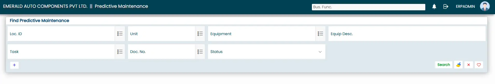
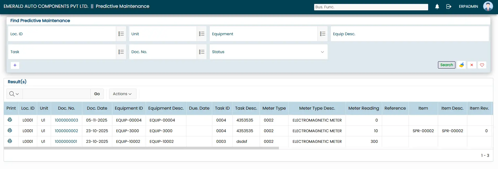
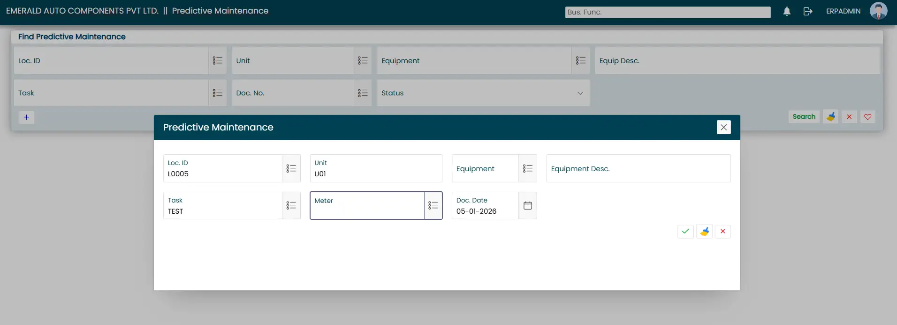
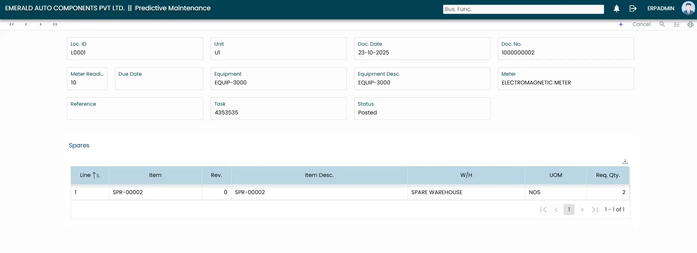

<div data-category="Plant Maintenance" data-title="Predictive Maintenance" data-updated="January 27, 2026" data-contributors="RoadmapIT" data-breadcrumb="Home,Plant Maintenance,Predictive Maintenance">
  <div class="page-content">
    <p>Predictive maintenance is a proactive maintenance strategy that uses data analysis tools and techniques to detect anomalies in your operation and possible defects in equipment and processes so you user fix them before they result in failure, predictive maintenance will be carried over using the below screen.</p>
    <h5>Navigation path:</h5>
    <p class="fs-6">Plant Maintenance \ Transactions \ Predictive Maintenance</p>
    
    <ul style="list-style-type: none; align-content: center">
      <li class="mouse-icon">Search screen displays the list of equipments with the relevant details and its status</li>
      <li class="mouse-icon">Click on Search to filter all the records.</li>
    </ul>
    
    <ul style="list-style-type: none; align-content: center">
      <li class="mouse-icon">Search screen displays the list of Predictive Maintenance with the relevant details and its status</li>
      <li class="mouse-icon">User can filter the respective documents by entering the search parameters at the header.</li>
      <li class="mouse-icon">On clicking search button, system displays the results relevant to the search parameters entered.</li>
      <li class="mouse-icon">
        Using
        
        icon, entered search parameters can be cleared.
      </li>
      <li class="mouse-icon">
        To close the screen, use
        <i class="bi bi-x fs-4 mx-2 text-danger"></i>
        icon
      </li>
      <li class="mouse-icon">
        By Clicking the
        <i class="bi bi-plus fs-4 mx-2 text-primary"></i>
        Add button we can create Predictive maintenance for the required Equipment.
      </li>
    </ul>
    
    <ul style="list-style-type: none; align-content: center">
      <li class="mouse-icon">Enter / Select the Loc ID from LOV.</li>
      <li class="mouse-icon">Enter / Select the Equipment from LOV.</li>
      <li class="mouse-icon">Enter / Select the task from LOV.</li>
      <li class="mouse-icon">Enter / select the Meter from the LOV.</li>
      <li class="mouse-icon">
        Click on
        <i class="bi bi-check-lg fs-4 mx-1 text-success"></i>
        to create the new predictive maintenance record
      </li>
    </ul>
    
    <ul style="list-style-type: none; align-content: center">
      <li class="mouse-icon">Enter Meter Reading</li>
      <li class="mouse-icon">
        Click
        <i class="bi bi-plus fs-4 mx-2 text-primary"></i>
        to add Spares Item
      </li>
      <li class="mouse-icon">Enter / Select the Spare Item.</li>
      <li class="mouse-icon">Enter the Req. Qty</li>
      <li class="mouse-icon">
        Click
        <i class="bi bi-check-lg fs-4 mx-1 text-success"></i>
        to save
      </li>
      <li class="mouse-icon">Post the Document.</li>
    </ul>
  </div>
</div>
